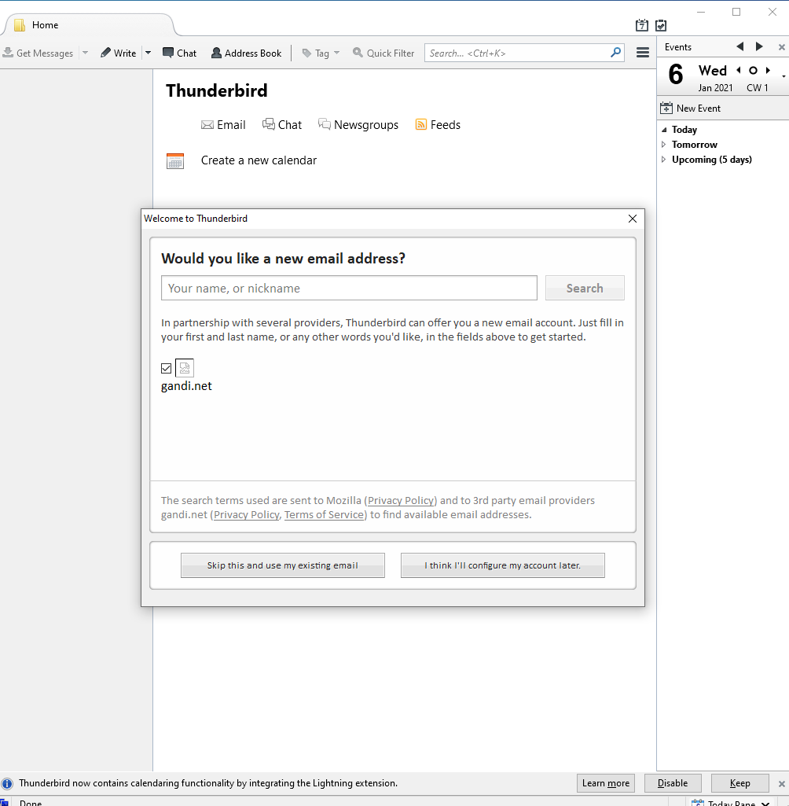

How to Install Thunderbird in Microsoft Win 10
1. Run the Thunderbird 38.2.0 Installer (“Thunderbird_setup_38.2.0”) and Click on the “Next” button.

2. Choose the “Setup type” according to the users and “Check Use Thunderbird as my default mail application” and click on the “Next” button.

3. “Thunderbird will be installed to the following location” and Click on the “Install” button.

4. The Installation Process will be Running wait a few second.

5. Installation Process has been Completed. “Check Launch Mozilla Thubnderbird Now” and Click on the “Finish” Button.

6. The Preview of Thunderbird Software as below.
